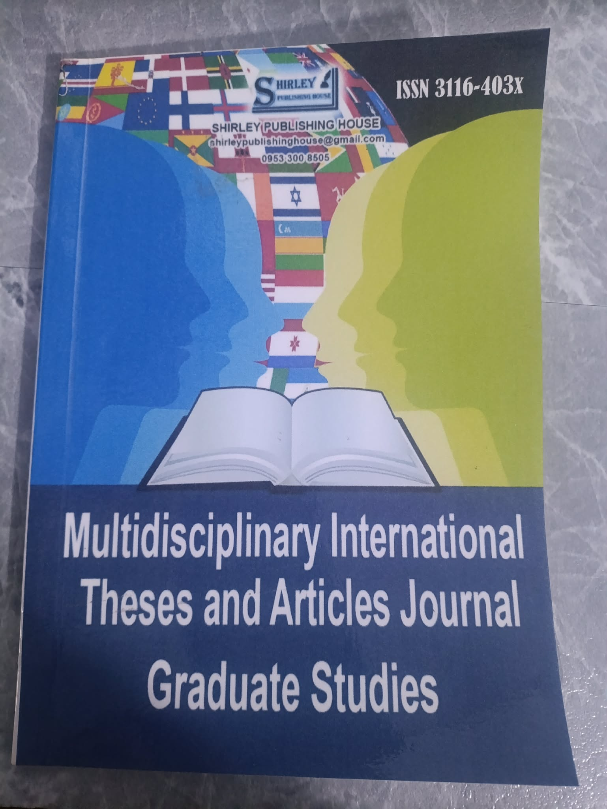

Research Articles
Original scholarly articles presenting research objectives, methods, findings, analysis, and conclusions.
Official journal
Explore the scope, publication details, and submission pathway of the Multidisciplinary International Theses and Articles Journal Graduate Studies.

Journal profile
The journal presents independently published scholarly works across different academic disciplines, including thesis- and dissertation-derived articles prepared as standalone publications.
Suitable submissions
Original scholarly articles presenting research objectives, methods, findings, analysis, and conclusions.
Standalone articles adapted from completed theses and rewritten for journal publication.
Focused articles developed from doctoral research and prepared for an academic readership.
Structured and properly referenced reviews that synthesize knowledge on a defined topic.
Detailed examinations of a specific case, setting, intervention, organization, or phenomenon.
Research and academic outputs prepared by schools, graduate programs, or research offices.
Send your title, abstract, discipline, author details, and manuscript information.